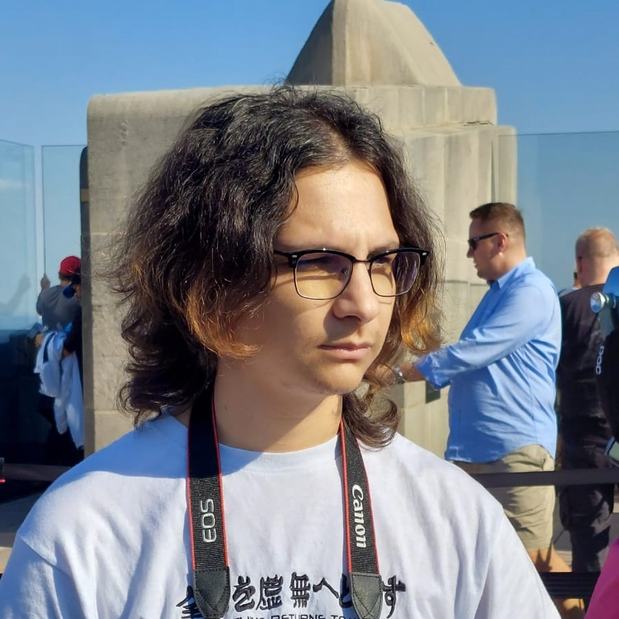

Tuvene David
- skyetuvene@gmail.com
- 0735836195
- GitHub
About me
I enjoy art and making things that help me learn more about myself. I’m a very open-minded person and creative person. I find programming languages very interesting and I love the process of coding as a whole. I am looking for a career in tech, as I have a lot of experience working in and around computers and I believe I already have a solid base to work with. I am proficient in the following:
- Microsoft Office (Excel, PowerPoint, Word);
- Good knowledge of HTML, CSS, Javascript, Wordpress and PHP;
- Photoshop & Premiere Pro;
- Good improvisational skills;
- Active listener;
- Open to criticism;
Experience
- June, 2022 – September, 2022 – Housekeeping, Pendry Hotel
- May, 2024 – October, 2024 – Moja Romania
I worked in the housekeeping department as a work & travel program over the summer.
Part-time job as content editor for online store
Languages
- English - Advanced
- Romanian - Native
Other information
I’ve done voluntary work for a local radio station creating marketing materials and helping with graphic and video design. I was also part of a theater play in Highschool, where I took care of all the audio related work.